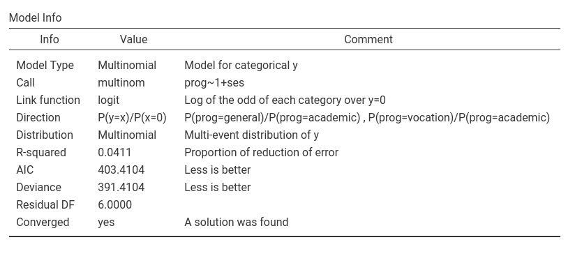
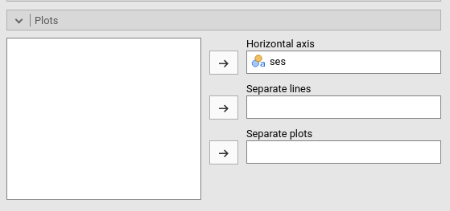
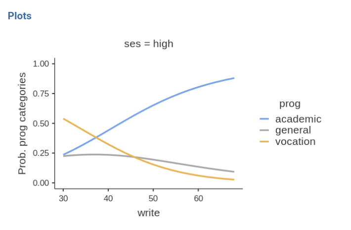

Multinomial analysis in jamovi
keywords jamovi, multinomial models, generalized linear models, post-hoc, moderated regression, interactions
In this example we study the relationships between a continuous independent variable, a categorical independent variable and their interaction on a categorical dependent variable.
We run the analyses with the GAMLj module in Jamovi. One can follow the example by downloading the cvs file and open it in jamovi. Be sure to install GAMLj module from within jamovi library.
The data are from a idre hsbdemo example. You can find similar analyses in pure R and a nice explanation of them at the UCLA idre web page.
The research design
The data set contains variables on 200 students. The outcome
(dependent) variable is prog, program type. There are three
programs that students can choose: general program, vocational program
and academic program. The predictor (independent) variables are social
economic status, ses, a three-level categorical variable
and writing score, write, a continuous variable UCLA
idre web page.
The cross-tab of frequencies of participants combining social
economical status and the outcome program is in the next table (in
jamovi frequencies -> Contingency tables)
.

The descriptive of the continuous independent variable
write are in the table.
Understanding the problem
We want to understand if choosing a particular program out of the
three available (general program, vocational program and academic
program) can be linked to the student ability to write
(write) and her/his social economical status. Because the
two predictors can be correlated, we want (ultimately) to run a single
model (multiple regression) such that the effect of each predictor is
estimated while keeping constant the effect of the other, and a possible
interaction can be assessed (moderated regression). We will run some
preliminary models to warm up.
The dependent variable is a 3-level categorical variable, so we need
a multinomial model. The aim of a multinomial model is straightfoward:
Estimating how the probability of each category in the dependent
variable varies as a function of the independent variable(s). In our
example, we are going to estimate how the probability of choosing each
program dependends on the ability to write (scores of
write) and whether this probability is different for the
three levels of social economical status (groups of
ses).
Details
The way the multinomial model does that is less straightforward (
you can skip this if you are in a hurry ): The dependent
variable is decomposed in K-1 dummy variables (where K is the number of
categories in the dependent variable) and a (sort of) logistic model is
estimated for each dummy. Thus, if we pick a reference group for the
dependent variable, say academic program, the model
estimates the influence of the independent variable(s) on the
logit (log of odd) of choosing each program over the
academic program. Having three programs, our analysis will estimate two
(K-1) set of coefficients: the effect of the independent variables on
the (log) odd of choosing general program over choosing
academic, and the (log) odd of choosing
vocation program over choosing academic. The
exact information about the change in odd (rather than the logit) can be
obtained by looking at the odd ratios
(exp(B)).
To be clearer, let’s consider the frequencies of the dependent variable:
The proabilities in the dependent variable are P(academic)=.525,
P(general)=.225, P(vocation)=.25. To capture the “change” in
probabilities and link it to the independent variable, the multinomial
model starts with the odds: the general vs academic odd is
P(general)/P(academic)=.225/.525=0.429. Thus, on average, choosing the
general program is less than half as likely as choosing the academic
program. The model estimates how this odd depends on the independent
variable. The same goes for the vocation vs academic odd,
P(vocation)/P(academic)=.25/.525=0.476. The model estimates how this odd
is influenced by the independent variables. Remember that the B
coefficients are expressed in the logit scale (log(odd)), the
exp(B) in the odd scale.
Interpretation
The overall test for each independent variable (Omnibus test Chi-squared) tests the null hypothesis that all the coefficients associated with an independent variable are zero, thus providing a “main effect” across all the dependent variable groups.
To simplify the interpretation, we can always look at the plots of the effects. In jamovi GAMLj the plots are on the probability scale, thus very easy to interpret: they show how the probability of each program changes for different levels of the independent variable.
The choice of the reference group is statisticaly immaterial, but can
be adjusted for interpretational purposes. Here we use
academic because in jamovi GAMLj the default is to set the
first group as the reference group: the prog variable is a
string variable, thus the groups are alphabetically ordered. If one
needs to change the reference group, a different coding of the dependent
variable groups can be used.
Simple Multinomial model
Let’s start with predicting prog with the social
economical status. In GAMLj generalized linear model we
select the multinomial model, push the prog
variable in the Dependent Variable field and
ses in Factors.

R-squared and Model info
As soon as we fix the variables, the results are there, with the first table showing some info about the model.

Here we can outline the R-squared, that gives information about the
goodness of fit of the model (see technical
details for more info). Our error of approximation of the data
decreases of 4% thanks to the ses variable. Put it in
another way, our ability to predict prog increases of 4%
thanks to ses over using only the observed
probabilities.
The other information in the table helps to interpret the results. In
particulat, the row Direction is useful. It gives the
definition of the logit that is used, including which is the reference
group of the dependent variable. In the example, it indicates that the
there are two logits, one is comparing prog=general against
prog=academic, the other prog=general against
prog=academic. Thus we know that all the independent
variables positively related with the first logit are positively related
with the odd of being in program general over the academic one, the
independent variables positively related with the rescon logit are
positively related with the odd of being in program vocation over the
academic one.
Omnibus test
The omnibus Chi-Squared test tests the null hypothesis that the
probabilities of prog choice are the same for all
ses groups. Based on the p-value, our results seem rare
under the null hypothesis, so we can deem the effect of ses
as statistical significant. Let’s go straight to the interpretation of
the results by visualizing the effects.
Ask for the plot in the Plots panel:

and see what we obtain:

The effec of ses is due to the fact that
high ses group is much more likely to choose the academic
program (prog=1) over the other two programs, while
low ses and middle ses choose the three
programs with more or less the same probability. The effect is not
strong (recall R-squared=.04), but is at least visible in the plot.
An interesting note can be made for the omnibus test
Chi-squared=16.8, p=.002. This test is equivalent to the standard
Chi-squared one obtains by running a chi-squared test on the contingency
table prog X ses. In fact (in jamovi
frequencies -> Contingency tables)
The standard chi-squared test is 16.6, but the
Likelihood ratio is 16.8. QED, the multinomial omnibus test
for categorical independent variables is exactly the chi-squared test
obtained on a cross-tabs, only estimated with the maximum likelihood
method. Accordingly, one can say that the frequencies of the cross-tab
prog X ses are not independent.
Coefficients
If one needs (and seldom one does in these cases), one can look at the model coefficients, the regression coefficients.

Skipping the intercept (recall that nobody interprets the interaction
:-) ), the first coefficient, ses1 is associated with the
dependent variable contrast general-academic as predicted
by the contrast low ses versus the average of the sample
(high, low , middle). The exp(B) is 1.938.
This means that the odd of choosing general over
academic for people of low social economical is 1.93 times
higher than for the average person in the sample, and this effect is
statistically significant (z=2.429, p=.001). Indeed, this is what the
plot actualy shows.

The other coefficients can be interpreted along the same line.
Multiple multinomial model.
Let’s include write as independent variable and see the
results.

Now we have two omnibus tests, indicating that the ability to write
has a stistically significant effect on the probability of choosing a
program, while keeping constant ses. The analysis also
confirms an effect of ses, also when write is
kept constant. As before, we can interpret the results by looking at the
probability plot.
The better one writes, the higher the probability of choosing the academic program, and the lower is the probability of choosing the vocational program. Choosing the general program does not depends on the writing skills.
Please notice in the plot that the independent variable
write it is centered to its mean. This is a default of
jamovi GAMLj in order to avoid unexpected results when interactions and
other complex effects are estimated. However, it is only a default
setting, so we can change it as we’re pleased.
By going to Covariates scoring tab, one can choose not
to center the variable.
Obviously, the results are not different, but the plot x-axis looks nicer now.
Moderated multinomial model
A question we can ask is whether the effect of writing abilities may be different at different levels of social economical status, thus putting forward a moderation hypothesis.
After setting the write covariate back to centered, we
can go to the Model tab and push the interaction term to
the right field. We need this because GAMLj abides by an old rule of not
estimating by default the iteraction between continuous and categorical
variable (this default may change in future releases).

Results show very weak support for an interaction, because the
Chi-square is low (3.46) and the p-value high (.484). This means that
the probabilities profile along the write scores are not
substantially different across social economical groups. We can verify
that by eyeballing the plot of probabilities broken down by
ses groups.


Comments?
Got comments, issues or spotted a bug? Please open an issue on GAMLj at github or send me an email